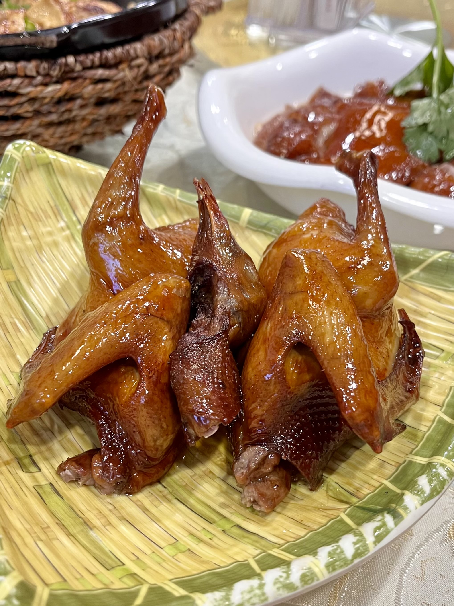

城市概况
深圳，中国广东省辖市，地处珠江口东岸，与香港隔海相望。作为中国第一个经济特区，40余年间从边陲小镇崛起为GDP超3.3万亿元（2023年）的国际化大都市，汇聚华为、腾讯、比亚迪等全球科技巨头，是全球电子信息产业中心与创新高地。
常住人口
1766万+
GDP总量
3.3万亿+
世界500强
10家+
经典景点
深圳湾公园
15公里滨海长廊，串联红树林、人才公园，是观海、骑行、看日落的城市会客厅。
梧桐山
深圳第一高峰（943.7米），登顶可360°俯瞰深港双城，云雾天气仿佛仙境。
甘坑古镇
300年客家文化古镇，融合非遗工坊、创意市集与沉浸式演出，展现深圳文化根脉。
特色美食
沙井蚝
深圳沙井镇特产，肥嫩多汁，可蒸、烤、煎，被誉为“海上牛奶”。
客家盆菜
传统客家宴菜，多层食材叠放，寓意“盆满钵满”，味道浓郁鲜香。

光明乳鸽
选用本地乳鸽，秘方腌制后油炸，皮脆肉嫩，深圳美食名片。
发展历程
1979
设市
国务院批准设立深圳市，开启改革开放征程。
1980
经济特区
全国人大批准设立深圳经济特区。
2019
先行示范区
中央支持深圳建设中国特色社会主义先行示范区。
城市地标
平安金融中心
深圳第一高楼（592.5米），全球超高层建筑前10，顶部云际观光层可360°俯瞰城市天际线。
深圳湾体育中心
「春茧」造型的地标性建筑，承办大运会开闭幕式，是集体育、商业、文化于一体的城市会客厅。
前海石公园
深圳改革开放再出发的象征地，刻有「前海」字样的巨石见证粤港澳大湾区建设进程。